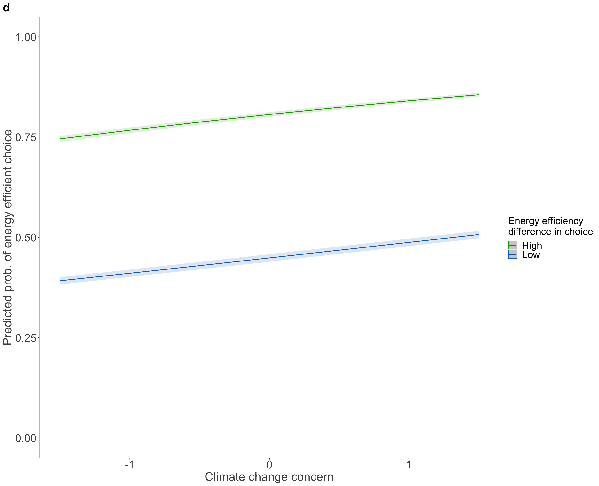
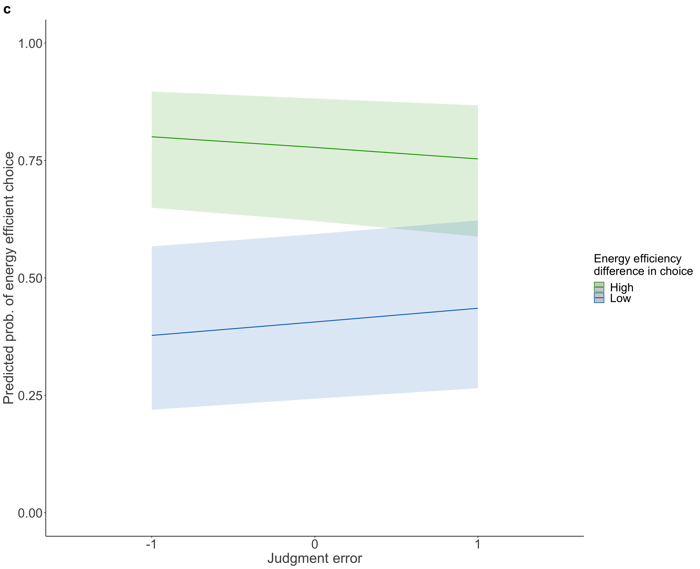
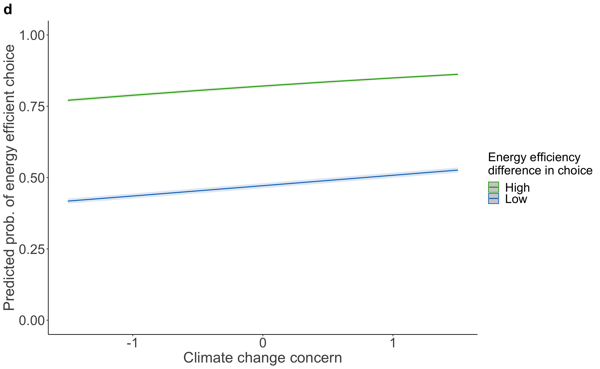
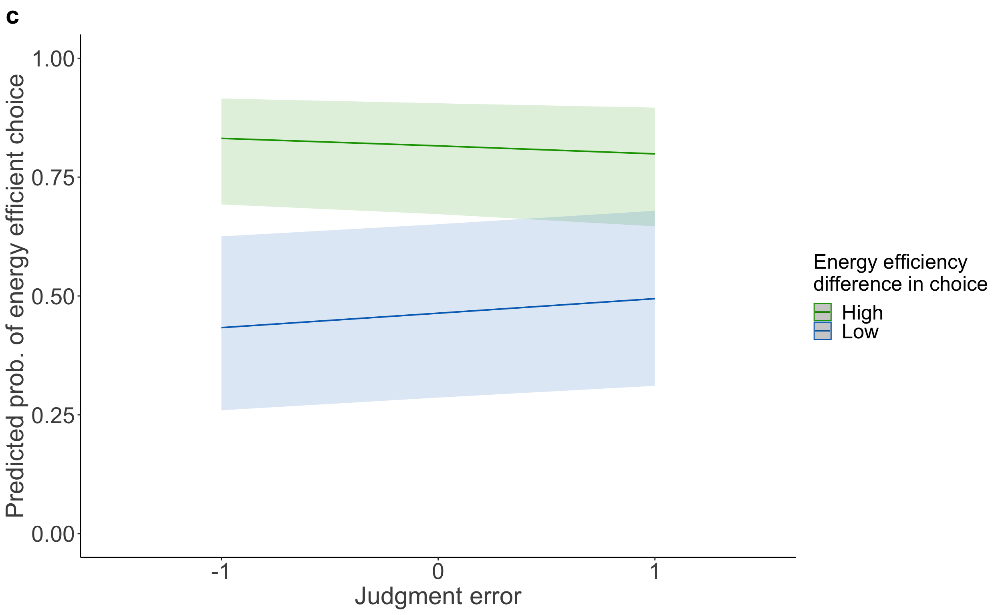
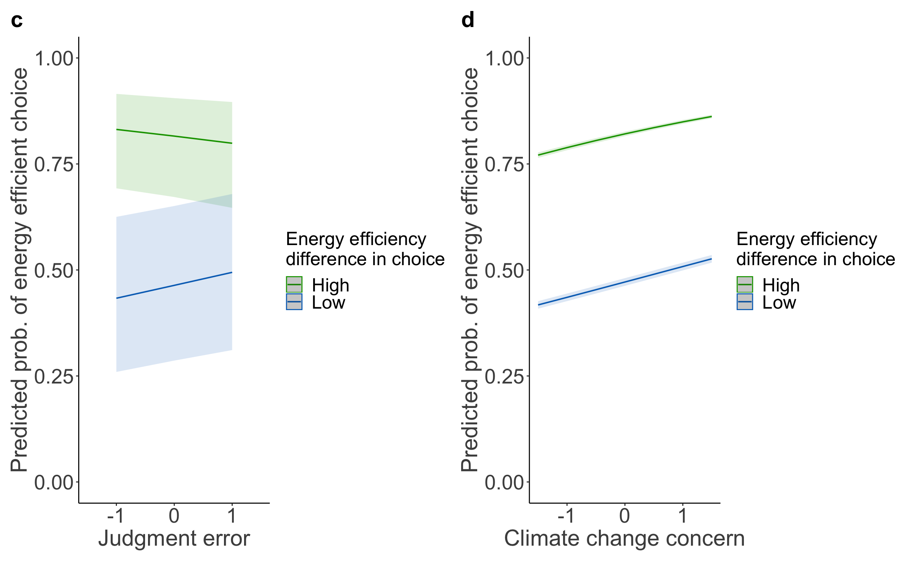
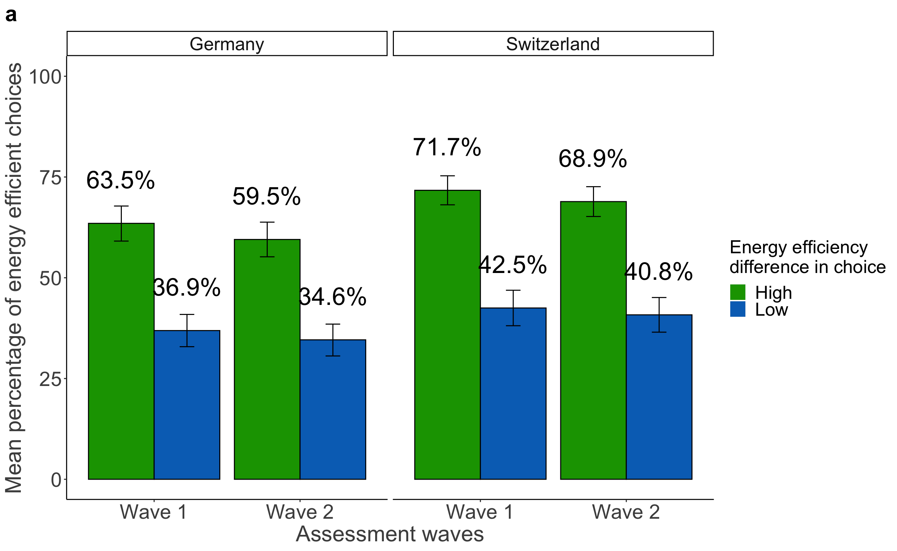
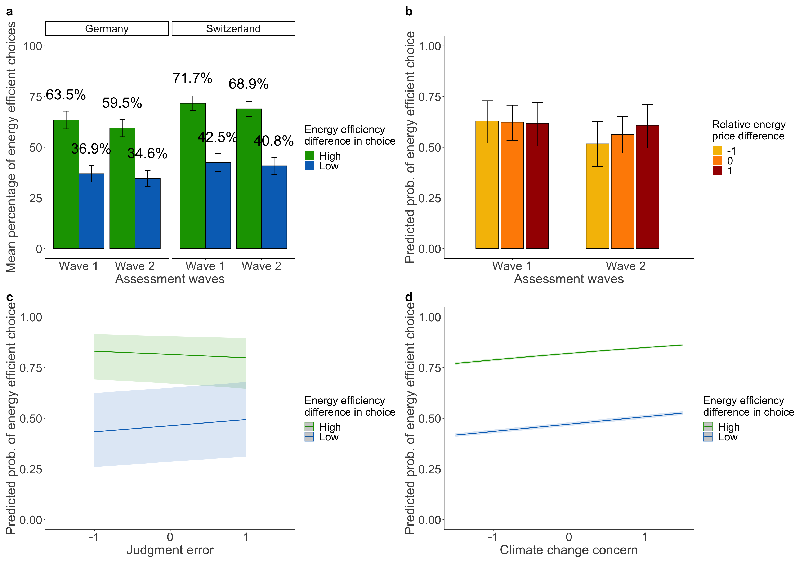
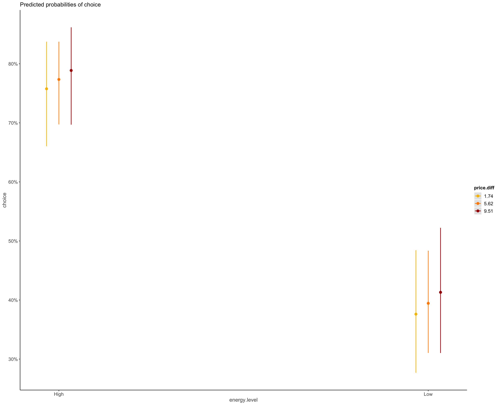

| choice | |||
|---|---|---|---|
| Predictors | Odds Ratios | CI | p |
| (Intercept) | 4.34 | 1.29 – 14.54 | 0.017 |
| price level [2] | 0.13 | 0.11 – 0.16 | <0.001 |
| energy level [Low] | 0.14 | 0.12 – 0.17 | <0.001 |
| concern scaled | 1.69 | 1.37 – 2.07 | <0.001 |
| country [Switzerland] | 2.01 | 1.27 – 3.16 | 0.003 |
| gender [male] | 0.73 | 0.47 – 1.15 | 0.177 |
| age | 1.01 | 1.00 – 1.03 | 0.046 |
| income<1’500- 2’499€ 3’100-4’299CHF | 0.59 | 0.29 – 1.19 | 0.139 |
|
income [2’500- 4’000€ <4’300- 5’899CHF] |
0.93 | 0.48 – 1.82 | 0.835 |
|
income [> 4’000€ >5’900 CHF] |
1.96 | 0.99 – 3.86 | 0.052 |
|
education [obligatory school] |
0.98 | 0.38 – 2.50 | 0.958 |
| education [middle school] | 0.52 | 0.20 – 1.35 | 0.180 |
| education [degree] | 0.70 | 0.27 – 1.81 | 0.459 |
|
energy level [Low] × concern scaled |
0.83 | 0.71 – 0.97 | 0.017 |
| Random Effects | |||
| σ2 | 3.29 | ||
| τ00 m | 5.94 | ||
| ICC | 0.64 | ||
| N m | 607 | ||
| Observations | 4249 | ||
| Marginal R2 / Conditional R2 | 0.244 / 0.731 | ||
| choice | |||
|---|---|---|---|
| Predictors | Odds Ratios | CI | p |
| (Intercept) | 3.60 | 1.05 – 12.29 | 0.041 |
| price level [2] | 0.13 | 0.11 – 0.16 | <0.001 |
| energy level [Low] | 0.14 | 0.12 – 0.18 | <0.001 |
| mean error scaled | 0.81 | 0.63 – 1.04 | 0.101 |
| country [Switzerland] | 2.06 | 1.30 – 3.27 | 0.002 |
| gender [male] | 0.64 | 0.40 – 1.00 | 0.048 |
| age | 1.02 | 1.00 – 1.03 | 0.024 |
| income<1’500- 2’499€ 3’100-4’299CHF | 0.60 | 0.30 – 1.23 | 0.165 |
|
income [2’500- 4’000€ <4’300- 5’899CHF] |
0.96 | 0.49 – 1.90 | 0.918 |
|
income [> 4’000€ >5’900 CHF] |
2.11 | 1.06 – 4.19 | 0.033 |
|
education [obligatory school] |
1.02 | 0.40 – 2.64 | 0.963 |
| education [middle school] | 0.61 | 0.23 – 1.60 | 0.314 |
| education [degree] | 0.76 | 0.29 – 1.98 | 0.569 |
|
energy level [Low] × mean error scaled |
1.31 | 1.08 – 1.58 | 0.006 |
| Random Effects | |||
| σ2 | 3.29 | ||
| τ00 m | 6.11 | ||
| ICC | 0.65 | ||
| N m | 607 | ||
| Observations | 4249 | ||
| Marginal R2 / Conditional R2 | 0.225 / 0.729 | ||
| choice | |||
|---|---|---|---|
| Predictors | Odds Ratios | CI | p |
| (Intercept) | 0.37 | 0.08 – 1.85 | 0.227 |
| price level [2] | 0.13 | 0.11 – 0.16 | <0.001 |
| energy level [2] | 6.86 | 5.60 – 8.40 | <0.001 |
| V2 | 1.30 | 0.57 – 3.00 | 0.532 |
| country [Switzerland] | 2.04 | 1.29 – 3.22 | 0.002 |
| gender [male] | 0.65 | 0.42 – 1.02 | 0.060 |
| age | 1.02 | 1.00 – 1.03 | 0.017 |
| income<1’500- 2’499€ 3’100-4’299CHF | 0.57 | 0.28 – 1.16 | 0.122 |
|
income [2’500- 4’000€ <4’300- 5’899CHF] |
0.91 | 0.46 – 1.78 | 0.778 |
|
income [> 4’000€ >5’900 CHF] |
1.99 | 1.01 – 3.94 | 0.047 |
|
education [obligatory school] |
1.00 | 0.39 – 2.58 | 0.996 |
| education [middle school] | 0.61 | 0.24 – 1.60 | 0.316 |
| education [degree] | 0.77 | 0.30 – 2.01 | 0.600 |
| Random Effects | |||
| σ2 | 3.29 | ||
| τ00 ResponseId | 6.05 | ||
| ICC | 0.65 | ||
| N ResponseId | 607 | ||
| Observations | 4249 | ||
| Marginal R2 / Conditional R2 | 0.224 / 0.727 | ||
| choice | |||
|---|---|---|---|
| Predictors | Odds Ratios | CI | p |
| (Intercept) | 0.48 | 0.14 – 1.68 | 0.251 |
| price level [2] | 0.13 | 0.11 – 0.16 | <0.001 |
| energy level [2] | 6.84 | 5.58 – 8.38 | <0.001 |
| est binary [under] | 0.96 | 0.61 – 1.51 | 0.859 |
| country [Switzerland] | 2.05 | 1.29 – 3.25 | 0.002 |
| gender [male] | 0.66 | 0.42 – 1.03 | 0.066 |
| age | 1.02 | 1.00 – 1.03 | 0.013 |
| income<1’500- 2’499€ 3’100-4’299CHF | 0.58 | 0.28 – 1.17 | 0.129 |
|
income [2’500- 4’000€ <4’300- 5’899CHF] |
0.91 | 0.46 – 1.79 | 0.784 |
|
income [> 4’000€ >5’900 CHF] |
2.02 | 1.02 – 4.00 | 0.044 |
|
education [obligatory school] |
1.07 | 0.41 – 2.74 | 0.895 |
| education [middle school] | 0.66 | 0.25 – 1.71 | 0.391 |
| education [degree] | 0.81 | 0.31 – 2.10 | 0.661 |
| Random Effects | |||
| σ2 | 3.29 | ||
| τ00 ResponseId | 6.05 | ||
| ICC | 0.65 | ||
| N ResponseId | 607 | ||
| Observations | 4249 | ||
| Marginal R2 / Conditional R2 | 0.224 / 0.727 | ||
| choice | |||
|---|---|---|---|
| Predictors | Odds Ratios | CI | p |
| (Intercept) | 1.63 | 0.51 – 5.22 | 0.411 |
| price level [2] | 0.15 | 0.12 – 0.18 | <0.001 |
| energy level [Low] | 0.17 | 0.14 – 0.21 | <0.001 |
| concern scaled | 1.45 | 1.21 – 1.76 | <0.001 |
| country [Switzerland] | 1.97 | 1.28 – 3.04 | 0.002 |
| gender [male] | 0.74 | 0.48 – 1.12 | 0.154 |
| age | 1.01 | 1.00 – 1.02 | 0.167 |
| income<1’500- 2’499€ 3’100-4’299CHF | 1.09 | 0.55 – 2.16 | 0.806 |
|
income [2’500- 4’000€ <4’300- 5’899CHF] |
1.88 | 0.98 – 3.60 | 0.057 |
|
income [> 4’000€ >5’900 CHF] |
2.99 | 1.57 – 5.70 | 0.001 |
|
education [obligatory school] |
1.31 | 0.53 – 3.24 | 0.560 |
| education [middle school] | 0.90 | 0.36 – 2.26 | 0.815 |
| education [degree] | 0.95 | 0.38 – 2.38 | 0.913 |
|
energy level [Low] × concern scaled |
1.00 | 0.86 – 1.16 | 0.951 |
| Random Effects | |||
| σ2 | 3.29 | ||
| τ00 m | 5.34 | ||
| ICC | 0.62 | ||
| N m | 607 | ||
| Observations | 4249 | ||
| Marginal R2 / Conditional R2 | 0.226 / 0.705 | ||
| choice | |||
|---|---|---|---|
| Predictors | Odds Ratios | CI | p |
| (Intercept) | 1.17 | 0.35 – 3.84 | 0.799 |
| price level [2] | 0.15 | 0.12 – 0.18 | <0.001 |
| energy level [Low] | 0.17 | 0.14 – 0.21 | <0.001 |
| mean error scaled | 0.80 | 0.63 – 1.01 | 0.063 |
| country [Switzerland] | 2.15 | 1.39 – 3.34 | 0.001 |
| gender [male] | 0.66 | 0.43 – 1.02 | 0.060 |
| age | 1.01 | 1.00 – 1.03 | 0.076 |
| income<1’500- 2’499€ 3’100-4’299CHF | 1.13 | 0.56 – 2.25 | 0.737 |
|
income [2’500- 4’000€ <4’300- 5’899CHF] |
1.81 | 0.94 – 3.50 | 0.077 |
|
income [> 4’000€ >5’900 CHF] |
2.99 | 1.56 – 5.75 | 0.001 |
|
education [obligatory school] |
1.46 | 0.58 – 3.67 | 0.416 |
| education [middle school] | 1.20 | 0.47 – 3.07 | 0.698 |
| education [degree] | 1.20 | 0.47 – 3.05 | 0.704 |
|
energy level [Low] × mean error scaled |
1.39 | 1.16 – 1.66 | <0.001 |
| Random Effects | |||
| σ2 | 3.29 | ||
| τ00 m | 5.53 | ||
| ICC | 0.63 | ||
| N m | 607 | ||
| Observations | 4249 | ||
| Marginal R2 / Conditional R2 | 0.210 / 0.705 | ||
| choice | |||
|---|---|---|---|
| Predictors | Odds Ratios | CI | p |
| (Intercept) | 2.12 | 0.84 – 5.37 | 0.111 |
| wave [Wave 2] | 0.82 | 0.73 – 0.92 | 0.001 |
| country [Switzerland] | 1.86 | 1.30 – 2.66 | 0.001 |
| energy level [Low] | 0.20 | 0.17 – 0.22 | <0.001 |
| price level [2] | 0.18 | 0.16 – 0.20 | <0.001 |
| age | 1.01 | 1.00 – 1.02 | 0.023 |
| gender [male] | 0.71 | 0.50 – 1.01 | 0.060 |
|
education [obligatory school] |
1.19 | 0.57 – 2.50 | 0.640 |
| education [middle school] | 0.87 | 0.41 – 1.85 | 0.726 |
| education [degree] | 0.98 | 0.47 – 2.06 | 0.959 |
| income<1’500- 2’499€ 3’100-4’299CHF | 0.91 | 0.63 – 1.34 | 0.645 |
|
income [2’500- 4’000€ <4’300- 5’899CHF] |
1.12 | 0.75 – 1.68 | 0.573 |
|
income [> 4’000€ >5’900 CHF] |
2.13 | 1.38 – 3.29 | 0.001 |
| Random Effects | |||
| σ2 | 3.29 | ||
| τ00 m | 4.11 | ||
| ICC | 0.56 | ||
| N m | 607 | ||
| Observations | 8498 | ||
| Marginal R2 / Conditional R2 | 0.205 / 0.646 | ||
| choice | |||
|---|---|---|---|
| Predictors | Odds Ratios | CI | p |
| (Intercept) | 2.30 | 2.30 – 2.30 | <0.001 |
| price level [2] | 0.18 | 0.18 – 0.18 | <0.001 |
| energy level [Low] | 0.20 | 0.20 – 0.20 | <0.001 |
| concern scaled | 1.26 | 1.26 – 1.27 | <0.001 |
| country [Switzerland] | 1.85 | 1.85 – 1.85 | <0.001 |
| wave [Wave 2] | 0.82 | 0.82 – 0.82 | <0.001 |
| gender [male] | 0.76 | 0.76 – 0.76 | <0.001 |
| age | 1.01 | 1.01 – 1.01 | <0.001 |
| income<1’500- 2’499€ 3’100-4’299CHF | 0.93 | 0.93 – 0.93 | <0.001 |
|
income [2’500- 4’000€ <4’300- 5’899CHF] |
1.13 | 1.13 – 1.13 | <0.001 |
|
income [> 4’000€ >5’900 CHF] |
2.13 | 2.13 – 2.13 | <0.001 |
|
education [obligatory school] |
1.18 | 1.18 – 1.18 | <0.001 |
| education [middle school] | 0.81 | 0.81 – 0.81 | <0.001 |
| education [degree] | 0.94 | 0.93 – 0.94 | <0.001 |
|
energy level [Low] × concern scaled |
0.92 | 0.92 – 0.93 | <0.001 |
| Random Effects | |||
| σ2 | 3.29 | ||
| τ00 m | 3.97 | ||
| ICC | 0.55 | ||
| N m | 607 | ||
| Observations | 8498 | ||
| Marginal R2 / Conditional R2 | 0.214 / 0.644 | ||
## Data were 'prettified'. Consider using `terms="concern.scaled [all]"` to
## get smooth plots.## Scale for y is already present.
## Adding another scale for y, which will replace the existing scale.
## x predicted std.error conf.low conf.high group
## 1 High 0.7671656 0.01931261 0.7603361 0.7738583 -1
## 2 High 0.8404026 0.01912065 0.8353118 0.8453652 1
## 3 Low 0.4105467 0.01941481 0.4013704 0.4197856 -1
## 4 Low 0.4875311 0.01903099 0.4782173 0.4968536 1| choice | |||
|---|---|---|---|
| Predictors | Odds Ratios | CI | p |
| (Intercept) | 1.88 | 0.73 – 4.82 | 0.187 |
| price level [2] | 0.17 | 0.15 – 0.20 | <0.001 |
| energy level [Low] | 0.20 | 0.17 – 0.22 | <0.001 |
| mean error scaled | 0.87 | 0.78 – 0.98 | 0.021 |
| country [Switzerland] | 1.87 | 1.30 – 2.68 | 0.001 |
| wave [Wave 2] | 0.82 | 0.73 – 0.92 | 0.001 |
| gender [male] | 0.72 | 0.51 – 1.03 | 0.074 |
| age | 1.01 | 1.00 – 1.02 | 0.033 |
| income<1’500- 2’499€ 3’100-4’299CHF | 0.96 | 0.66 – 1.41 | 0.850 |
|
income [2’500- 4’000€ <4’300- 5’899CHF] |
1.19 | 0.79 – 1.78 | 0.411 |
|
income [> 4’000€ >5’900 CHF] |
2.24 | 1.44 – 3.49 | <0.001 |
|
education [obligatory school] |
1.36 | 0.64 – 2.87 | 0.426 |
| education [middle school] | 0.98 | 0.46 – 2.10 | 0.960 |
| education [degree] | 1.11 | 0.52 – 2.36 | 0.781 |
|
energy level [Low] × mean error scaled |
1.29 | 1.14 – 1.46 | <0.001 |
| Random Effects | |||
| σ2 | 3.29 | ||
| τ00 m | 4.16 | ||
| ICC | 0.56 | ||
| N m | 607 | ||
| Observations | 8498 | ||
| Marginal R2 / Conditional R2 | 0.207 / 0.650 | ||
## Data were 'prettified'. Consider using `terms="mean.error_scaled [all]"`
## to get smooth plots.## Scale for y is already present.
## Adding another scale for y, which will replace the existing scale.
## x predicted std.error conf.low conf.high group
## 1 High 0.8005908 0.3944226 0.6495216 0.8968815 -1
## 2 High 0.7534261 0.3884403 0.5879847 0.8674155 1
## 3 Low 0.3775900 0.3929945 0.2192495 0.5672071 -1
## 4 Low 0.4354270 0.3877082 0.2650982 0.6224949 1## Data: data.product.waves.long
## Models:
## model.product.waves: choice ~ wave + country + energy.level + price.level + age + gender + education + income + (1 | m)
## model.H4a.both: choice ~ price.level + energy.level * concern.scaled + country + wave + gender + age + income + education + (1 | m)
## npar AIC BIC logLik deviance Chisq Df Pr(>Chisq)
## model.product.waves 14 8283.4 8382.0 -4127.7 8255.4
## model.H4a.both 16 8273.3 8386.1 -4120.6 8241.3 14.075 2 0.0008783
##
## model.product.waves
## model.H4a.both ***
## ---
## Signif. codes: 0 '***' 0.001 '**' 0.01 '*' 0.05 '.' 0.1 ' ' 1## Data: data.product.waves.long
## Models:
## model.product.waves: choice ~ wave + country + energy.level + price.level + age + gender + education + income + (1 | m)
## model.H4a.error.both: choice ~ price.level + energy.level * mean.error_scaled + country + wave + gender + age + income + education + (1 | m)
## npar AIC BIC logLik deviance Chisq Df Pr(>Chisq)
## model.product.waves 14 8283.4 8382 -4127.7 8255.4
## model.H4a.error.both 16 8270.3 8383 -4119.1 8238.3 17.118 2 0.0001918 ***
## ---
## Signif. codes: 0 '***' 0.001 '**' 0.01 '*' 0.05 '.' 0.1 ' ' 1| choice | |||
|---|---|---|---|
| Predictors | Odds Ratios | CI | p |
| (Intercept) | 3.98 | 1.13 – 13.96 | 0.031 |
| price level [2] | 0.13 | 0.10 – 0.16 | <0.001 |
| energy level [Low] | 0.14 | 0.11 – 0.17 | <0.001 |
| concern scaled | 1.68 | 1.35 – 2.08 | <0.001 |
| country [Switzerland] | 1.97 | 1.25 – 3.12 | 0.004 |
| gender [male] | 0.80 | 0.51 – 1.26 | 0.346 |
| age | 1.02 | 1.00 – 1.03 | 0.019 |
| income<1’500- 2’499€ 3’100-4’299CHF | 0.61 | 0.30 – 1.25 | 0.176 |
|
income [2’500- 4’000€ <4’300- 5’899CHF] |
0.90 | 0.45 – 1.77 | 0.751 |
|
income [> 4’000€ >5’900 CHF] |
1.87 | 0.94 – 3.74 | 0.074 |
|
education [obligatory school] |
0.92 | 0.35 – 2.45 | 0.872 |
| education [middle school] | 0.55 | 0.20 – 1.48 | 0.237 |
| education [degree] | 0.67 | 0.25 – 1.80 | 0.425 |
|
energy level [Low] × concern scaled |
0.85 | 0.72 – 1.00 | 0.049 |
| Random Effects | |||
| σ2 | 3.29 | ||
| τ00 m | 5.85 | ||
| ICC | 0.64 | ||
| N m | 586 | ||
| Observations | 4102 | ||
| Marginal R2 / Conditional R2 | 0.247 / 0.729 | ||
| choice | |||
|---|---|---|---|
| Predictors | Odds Ratios | CI | p |
| (Intercept) | 3.32 | 0.93 – 11.82 | 0.064 |
| price level [2] | 0.13 | 0.10 – 0.16 | <0.001 |
| energy level [Low] | 0.14 | 0.11 – 0.17 | <0.001 |
| mean error scaled | 0.87 | 0.66 – 1.14 | 0.302 |
| country [Switzerland] | 2.09 | 1.32 – 3.33 | 0.002 |
| gender [male] | 0.72 | 0.46 – 1.13 | 0.149 |
| age | 1.02 | 1.01 – 1.04 | 0.008 |
| income<1’500- 2’499€ 3’100-4’299CHF | 0.62 | 0.30 – 1.27 | 0.193 |
|
income [2’500- 4’000€ <4’300- 5’899CHF] |
0.93 | 0.47 – 1.84 | 0.829 |
|
income [> 4’000€ >5’900 CHF] |
1.97 | 0.98 – 3.94 | 0.056 |
|
education [obligatory school] |
0.92 | 0.34 – 2.45 | 0.860 |
| education [middle school] | 0.64 | 0.23 – 1.73 | 0.376 |
| education [degree] | 0.71 | 0.26 – 1.92 | 0.498 |
|
energy level [Low] × mean error scaled |
1.30 | 1.05 – 1.59 | 0.015 |
| Random Effects | |||
| σ2 | 3.29 | ||
| τ00 m | 5.98 | ||
| ICC | 0.64 | ||
| N m | 586 | ||
| Observations | 4102 | ||
| Marginal R2 / Conditional R2 | 0.229 / 0.726 | ||
| choice | |||
|---|---|---|---|
| Predictors | Odds Ratios | CI | p |
| (Intercept) | 0.63 | 0.12 – 3.18 | 0.573 |
| price level [2] | 0.13 | 0.11 – 0.16 | <0.001 |
| energy level [2] | 6.98 | 5.68 – 8.58 | <0.001 |
| concern scaled | 1.52 | 1.26 – 1.83 | <0.001 |
| country [Switzerland] | 1.94 | 1.24 – 3.04 | 0.004 |
| V2 | 1.08 | 0.47 – 2.51 | 0.856 |
| gender [male] | 0.79 | 0.51 – 1.23 | 0.291 |
| age | 1.02 | 1.00 – 1.03 | 0.017 |
| income<1’500- 2’499€ 3’100-4’299CHF | 0.61 | 0.30 – 1.23 | 0.168 |
|
income [2’500- 4’000€ <4’300- 5’899CHF] |
0.91 | 0.47 – 1.78 | 0.790 |
|
income [> 4’000€ >5’900 CHF] |
1.88 | 0.96 – 3.69 | 0.067 |
|
education [obligatory school] |
0.75 | 0.29 – 1.95 | 0.551 |
| education [middle school] | 0.45 | 0.17 – 1.18 | 0.105 |
| education [degree] | 0.53 | 0.20 – 1.41 | 0.205 |
| Random Effects | |||
| σ2 | 3.29 | ||
| τ00 ResponseId | 5.57 | ||
| ICC | 0.63 | ||
| N ResponseId | 586 | ||
| Observations | 4102 | ||
| Marginal R2 / Conditional R2 | 0.248 / 0.721 | ||
| choice | |||
|---|---|---|---|
| Predictors | Odds Ratios | CI | p |
| (Intercept) | 0.47 | 0.08 – 2.66 | 0.395 |
| price level [2] | 0.13 | 0.10 – 0.16 | <0.001 |
| energy level [2] | 6.41 | 2.39 – 17.23 | <0.001 |
| V2 | 0.99 | 0.39 – 2.51 | 0.991 |
| country [Switzerland] | 2.04 | 1.28 – 3.24 | 0.003 |
| gender [male] | 0.70 | 0.45 – 1.11 | 0.127 |
| age | 1.02 | 1.01 – 1.04 | 0.008 |
| income<1’500- 2’499€ 3’100-4’299CHF | 0.65 | 0.32 – 1.34 | 0.248 |
|
income [2’500- 4’000€ <4’300- 5’899CHF] |
0.98 | 0.49 – 1.94 | 0.948 |
|
income [> 4’000€ >5’900 CHF] |
2.12 | 1.05 – 4.25 | 0.035 |
|
education [obligatory school] |
0.90 | 0.33 – 2.40 | 0.828 |
| education [middle school] | 0.61 | 0.22 – 1.65 | 0.326 |
| education [degree] | 0.68 | 0.25 – 1.85 | 0.453 |
| energy level [2] × V2 | 1.09 | 0.50 – 2.36 | 0.830 |
| Random Effects | |||
| σ2 | 3.29 | ||
| τ00 ResponseId | 6.00 | ||
| ICC | 0.65 | ||
| N ResponseId | 586 | ||
| Observations | 4102 | ||
| Marginal R2 / Conditional R2 | 0.227 / 0.726 | ||
| choice | |||
|---|---|---|---|
| Predictors | Odds Ratios | CI | p |
| (Intercept) | 0.57 | 0.15 – 2.07 | 0.390 |
| price level [2] | 0.13 | 0.10 – 0.16 | <0.001 |
| energy level [2] | 7.09 | 5.77 – 8.73 | <0.001 |
| est binary [under] | 1.05 | 0.67 – 1.65 | 0.841 |
| country [Switzerland] | 2.03 | 1.28 – 3.23 | 0.003 |
| gender [male] | 0.69 | 0.44 – 1.08 | 0.105 |
| age | 1.02 | 1.00 – 1.03 | 0.012 |
| income<1’500- 2’499€ 3’100-4’299CHF | 0.59 | 0.29 – 1.21 | 0.148 |
|
income [2’500- 4’000€ <4’300- 5’899CHF] |
0.88 | 0.44 – 1.75 | 0.720 |
|
income [> 4’000€ >5’900 CHF] |
1.89 | 0.95 – 3.78 | 0.071 |
|
education [obligatory school] |
0.85 | 0.32 – 2.28 | 0.753 |
| education [middle school] | 0.58 | 0.21 – 1.56 | 0.279 |
| education [degree] | 0.66 | 0.24 – 1.78 | 0.413 |
| Random Effects | |||
| σ2 | 3.29 | ||
| τ00 ResponseId | 5.95 | ||
| ICC | 0.64 | ||
| N ResponseId | 586 | ||
| Observations | 4102 | ||
| Marginal R2 / Conditional R2 | 0.228 / 0.725 | ||
| choice | |||
|---|---|---|---|
| Predictors | Odds Ratios | CI | p |
| (Intercept) | 1.55 | 0.47 – 5.11 | 0.473 |
| price level [2] | 0.14 | 0.12 – 0.18 | <0.001 |
| energy level [Low] | 0.17 | 0.14 – 0.21 | <0.001 |
| concern scaled | 1.45 | 1.19 – 1.76 | <0.001 |
| country [Switzerland] | 2.04 | 1.33 – 3.15 | 0.001 |
| gender [male] | 0.74 | 0.49 – 1.14 | 0.170 |
| age | 1.01 | 1.00 – 1.03 | 0.094 |
| income<1’500- 2’499€ 3’100-4’299CHF | 1.19 | 0.60 – 2.36 | 0.615 |
|
income [2’500- 4’000€ <4’300- 5’899CHF] |
1.91 | 0.99 – 3.68 | 0.053 |
|
income [> 4’000€ >5’900 CHF] |
3.01 | 1.57 – 5.75 | 0.001 |
|
education [obligatory school] |
1.15 | 0.46 – 2.93 | 0.761 |
| education [middle school] | 0.89 | 0.35 – 2.31 | 0.818 |
| education [degree] | 0.88 | 0.34 – 2.26 | 0.789 |
|
energy level [Low] × concern scaled |
1.02 | 0.87 – 1.20 | 0.784 |
| Random Effects | |||
| σ2 | 3.29 | ||
| τ00 m | 5.16 | ||
| ICC | 0.61 | ||
| N m | 586 | ||
| Observations | 4102 | ||
| Marginal R2 / Conditional R2 | 0.231 / 0.701 | ||
| choice | |||
|---|---|---|---|
| Predictors | Odds Ratios | CI | p |
| (Intercept) | 1.31 | 0.38 – 4.49 | 0.665 |
| price level [2] | 0.14 | 0.12 – 0.17 | <0.001 |
| energy level [Low] | 0.17 | 0.14 – 0.21 | <0.001 |
| mean error scaled | 0.83 | 0.64 – 1.08 | 0.157 |
| country [Switzerland] | 2.16 | 1.39 – 3.37 | 0.001 |
| gender [male] | 0.68 | 0.44 – 1.06 | 0.087 |
| age | 1.01 | 1.00 – 1.03 | 0.044 |
| income<1’500- 2’499€ 3’100-4’299CHF | 1.22 | 0.61 – 2.46 | 0.575 |
|
income [2’500- 4’000€ <4’300- 5’899CHF] |
1.84 | 0.94 – 3.59 | 0.075 |
|
income [> 4’000€ >5’900 CHF] |
3.10 | 1.59 – 6.02 | 0.001 |
|
education [obligatory school] |
1.16 | 0.45 – 3.00 | 0.763 |
| education [middle school] | 1.03 | 0.39 – 2.72 | 0.946 |
| education [degree] | 0.94 | 0.36 – 2.48 | 0.905 |
|
energy level [Low] × mean error scaled |
1.36 | 1.12 – 1.66 | 0.002 |
| Random Effects | |||
| σ2 | 3.29 | ||
| τ00 m | 5.46 | ||
| ICC | 0.62 | ||
| N m | 586 | ||
| Observations | 4102 | ||
| Marginal R2 / Conditional R2 | 0.214 / 0.705 | ||
| choice | |||
|---|---|---|---|
| Predictors | Odds Ratios | CI | p |
| (Intercept) | 1.90 | 0.73 – 4.94 | 0.189 |
| wave [Wave 2] | 0.82 | 0.73 – 0.92 | 0.001 |
| country [Switzerland] | 1.92 | 1.34 – 2.74 | <0.001 |
| energy level [Low] | 0.20 | 0.17 – 0.22 | <0.001 |
| price level [2] | 0.17 | 0.15 – 0.20 | <0.001 |
| age | 1.02 | 1.00 – 1.03 | 0.006 |
| gender [male] | 0.76 | 0.54 – 1.09 | 0.133 |
|
education [obligatory school] |
1.12 | 0.52 – 2.40 | 0.768 |
| education [middle school] | 0.92 | 0.43 – 2.00 | 0.841 |
| education [degree] | 0.93 | 0.43 – 2.01 | 0.858 |
| income<1’500- 2’499€ 3’100-4’299CHF | 0.96 | 0.65 – 1.40 | 0.824 |
|
income [2’500- 4’000€ <4’300- 5’899CHF] |
1.11 | 0.74 – 1.67 | 0.602 |
|
income [> 4’000€ >5’900 CHF] |
2.10 | 1.35 – 3.25 | 0.001 |
| Random Effects | |||
| σ2 | 3.29 | ||
| τ00 m | 3.96 | ||
| ICC | 0.55 | ||
| N m | 586 | ||
| Observations | 8204 | ||
| Marginal R2 / Conditional R2 | 0.210 / 0.642 | ||
| choice | |||
|---|---|---|---|
| Predictors | Odds Ratios | CI | p |
| (Intercept) | 2.19 | 2.19 – 2.20 | <0.001 |
| price level [2] | 0.17 | 0.17 – 0.17 | <0.001 |
| energy level [Low] | 0.19 | 0.19 – 0.19 | <0.001 |
| concern scaled | 1.23 | 1.23 – 1.23 | <0.001 |
| country [Switzerland] | 1.87 | 1.87 – 1.87 | <0.001 |
| wave [Wave 2] | 0.81 | 0.81 – 0.82 | <0.001 |
| gender [male] | 0.77 | 0.77 – 0.77 | <0.001 |
| age | 1.01 | 1.01 – 1.02 | <0.001 |
| income<1’500- 2’499€ 3’100-4’299CHF | 1.01 | 1.01 – 1.01 | <0.001 |
|
income [2’500- 4’000€ <4’300- 5’899CHF] |
1.15 | 1.14 – 1.15 | <0.001 |
|
income [> 4’000€ >5’900 CHF] |
2.16 | 2.15 – 2.16 | <0.001 |
|
education [obligatory school] |
1.02 | 1.02 – 1.02 | <0.001 |
| education [middle school] | 0.78 | 0.78 – 0.78 | <0.001 |
| education [degree] | 0.84 | 0.84 – 0.84 | <0.001 |
|
energy level [Low] × concern scaled |
0.94 | 0.94 – 0.94 | <0.001 |
| Random Effects | |||
| σ2 | 3.29 | ||
| τ00 m | 3.84 | ||
| ICC | 0.54 | ||
| N m | 586 | ||
| Observations | 8204 | ||
| Marginal R2 / Conditional R2 | 0.218 / 0.639 | ||
## Data were 'prettified'. Consider using `terms="concern.scaled [all]"` to
## get smooth plots.## Scale for y is already present.
## Adding another scale for y, which will replace the existing scale.
## x predicted std.error conf.low conf.high group
## 1 High 0.7886035 0.01859878 0.7824625 0.7946165 -1
## 2 High 0.8492737 0.01859877 0.8445478 0.8538808 1
## 3 Low 0.4354177 0.01860603 0.4264751 0.4444026 -1
## 4 Low 0.5080827 0.01860604 0.4989666 0.5171934 1| choice | |||
|---|---|---|---|
| Predictors | Odds Ratios | CI | p |
| (Intercept) | 2.08 | 0.80 – 5.43 | 0.133 |
| price level [2] | 0.17 | 0.15 – 0.20 | <0.001 |
| energy level [Low] | 0.20 | 0.17 – 0.22 | <0.001 |
| mean error scaled | 0.90 | 0.79 – 1.01 | 0.083 |
| country [Switzerland] | 1.89 | 1.32 – 2.70 | <0.001 |
| wave [Wave 2] | 0.81 | 0.72 – 0.91 | 0.001 |
| gender [male] | 0.74 | 0.52 – 1.05 | 0.087 |
| age | 1.02 | 1.00 – 1.03 | 0.009 |
| income<1’500- 2’499€ 3’100-4’299CHF | 0.96 | 0.66 – 1.40 | 0.835 |
|
income [2’500- 4’000€ <4’300- 5’899CHF] |
1.13 | 0.76 – 1.70 | 0.540 |
|
income [> 4’000€ >5’900 CHF] |
2.16 | 1.40 – 3.35 | 0.001 |
|
education [obligatory school] |
1.07 | 0.50 – 2.29 | 0.863 |
| education [middle school] | 0.87 | 0.40 – 1.89 | 0.732 |
| education [degree] | 0.90 | 0.42 – 1.93 | 0.777 |
|
energy level [Low] × mean error scaled |
1.26 | 1.11 – 1.43 | <0.001 |
| Random Effects | |||
| σ2 | 3.29 | ||
| τ00 m | 3.95 | ||
| ICC | 0.55 | ||
| N m | 586 | ||
| Observations | 8204 | ||
| Marginal R2 / Conditional R2 | 0.212 / 0.642 | ||
## Data were 'prettified'. Consider using `terms="mean.error_scaled [all]"`
## to get smooth plots.## Scale for y is already present.
## Adding another scale for y, which will replace the existing scale.
## x predicted std.error conf.low conf.high group
## 1 High 0.8314706 0.4000926 0.6925182 0.9153090 -1
## 2 High 0.7988637 0.3956874 0.6464966 0.8961110 1
## 3 Low 0.4333324 0.3980875 0.2595123 0.6252680 -1
## 4 Low 0.4943773 0.3942609 0.3110470 0.6792321 1
## Data: data.product.waves.long_clean
## Models:
## model.product.waves_clean: choice ~ wave + country + energy.level + price.level + age + gender + education + income + (1 | m)
## model.H4a.both_clean: choice ~ price.level + energy.level * concern.scaled + country + wave + gender + age + income + education + (1 | m)
## npar AIC BIC logLik deviance Chisq Df
## model.product.waves_clean 14 8035.7 8133.8 -4003.8 8007.7
## model.H4a.both_clean 16 8027.9 8140.1 -3997.9 7995.9 11.797 2
## Pr(>Chisq)
## model.product.waves_clean
## model.H4a.both_clean 0.002744 **
## ---
## Signif. codes: 0 '***' 0.001 '**' 0.01 '*' 0.05 '.' 0.1 ' ' 1## Data: data.product.waves.long_clean
## Models:
## model.product.waves_clean: choice ~ wave + country + energy.level + price.level + age + gender + education + income + (1 | m)
## model.H4a.error.both_clean: choice ~ price.level + energy.level * mean.error_scaled + country + wave + gender + age + income + education + (1 | m)
## npar AIC BIC logLik deviance Chisq Df
## model.product.waves_clean 14 8035.7 8133.8 -4003.8 8007.7
## model.H4a.error.both_clean 16 8026.7 8138.9 -3997.3 7994.7 13.007 2
## Pr(>Chisq)
## model.product.waves_clean
## model.H4a.error.both_clean 0.001498 **
## ---
## Signif. codes: 0 '***' 0.001 '**' 0.01 '*' 0.05 '.' 0.1 ' ' 1
## [1] 22.21745= with 3-way interaction, concern scaled and mean error scaled, and demographics
## Analysis of Deviance Table (Type II Wald chisquare tests)
##
## Response: choice
## Chisq Df Pr(>Chisq)
## rel_price_difference 0.4063 1 0.523829
## wave 8.1640 1 0.004273 **
## energy.level 309.0142 1 < 2.2e-16 ***
## concern.scaled 1.9033 1 0.167715
## mean.error_scaled 1.7840 1 0.181663
## price.level 401.0970 1 < 2.2e-16 ***
## age 3.4435 1 0.063500 .
## gender 4.2987 1 0.038141 *
## income 20.4957 3 0.000134 ***
## education 3.2057 3 0.360988
## rel_price_difference:wave 6.1132 1 0.013418 *
## rel_price_difference:energy.level 0.0048 1 0.944950
## wave:energy.level 0.2244 1 0.635745
## rel_price_difference:wave:energy.level 0.0265 1 0.870567
## ---
## Signif. codes: 0 '***' 0.001 '**' 0.01 '*' 0.05 '.' 0.1 ' ' 1## NOTE: Results may be misleading due to involvement in interactions## x predicted std.error conf.low conf.high rel_price_difference wave2
## 1 Wave 1 0.6299165 0.1432153 0.5203115 0.7298400 -1 0.78
## 2 Wave 1 0.6242821 0.1170863 0.5347683 0.7075467 0 1.00
## 3 Wave 1 0.6186211 0.1451066 0.5069642 0.7211512 1 1.22
## 4 Wave 2 0.5165772 0.1429028 0.4057391 0.6261407 -1 1.75
## 5 Wave 2 0.5629524 0.1170261 0.4717355 0.6509275 0 1.97
## 6 Wave 2 0.6084775 0.1452818 0.4962524 0.7122944 1 2.19/
All plots together 
## Analysis of Deviance Table (Type II Wald chisquare tests)
##
## Response: choice
## Chisq Df Pr(>Chisq)
## rel_price_difference 0.1094 1 0.740811
## wave 8.4069 1 0.003738 **
## energy.level 303.4000 1 < 2.2e-16 ***
## price.level 379.0757 1 < 2.2e-16 ***
## Preis2022 0.8385 1 0.359817
## concern.scaled 2.0929 1 0.147984
## mean.error_scaled 3.3345 1 0.067841 .
## age 3.1090 1 0.077862 .
## gender 3.5806 1 0.058458 .
## income 21.5698 3 8.015e-05 ***
## education 2.6199 3 0.454020
## rel_price_difference:wave 6.7445 1 0.009404 **
## rel_price_difference:energy.level 0.0051 1 0.943288
## wave:energy.level 0.1580 1 0.690964
## rel_price_difference:wave:energy.level 0.0372 1 0.847156
## ---
## Signif. codes: 0 '***' 0.001 '**' 0.01 '*' 0.05 '.' 0.1 ' ' 1## Analysis of Deviance Table (Type II Wald chisquare tests)
##
## Response: choice
## Chisq Df Pr(>Chisq)
## price.diff 0.4074 1 0.5232775
## wave 8.2690 1 0.0040327 **
## energy.level 308.9164 1 < 2.2e-16 ***
## concern.scaled 1.8163 1 0.1777515
## mean.error_scaled 1.7603 1 0.1845856
## price.level 400.6181 1 < 2.2e-16 ***
## age 3.3404 1 0.0675997 .
## gender 4.3126 1 0.0378313 *
## income 20.2215 3 0.0001527 ***
## education 3.3994 3 0.3340500
## price.diff:wave 6.0513 1 0.0138960 *
## price.diff:energy.level 0.0041 1 0.9486584
## wave:energy.level 0.2551 1 0.6135374
## price.diff:wave:energy.level 0.0429 1 0.8358357
## ---
## Signif. codes: 0 '***' 0.001 '**' 0.01 '*' 0.05 '.' 0.1 ' ' 1## NOTE: Results may be misleading due to involvement in interactions